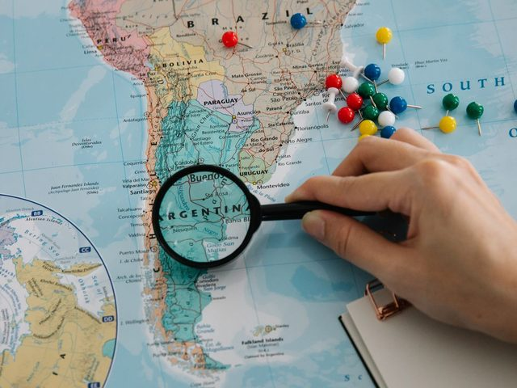

國家、世界和常見的國名縮寫，共 7 個字。注意國名、國家的人、語言怎麼說，以及 R.O.C.、U.S.A. 是哪幾個字的縮寫。

1countryn.
國家；鄉下
複數 countries
Japan and Korea are both Asian countries.日本和韓國都是亞洲國家。
2worldn.
世界
all over the world 全世界
People all over the world love music.全世界的人都喜歡音樂。
3American.
美國；美洲
美國人、美國的：American
My cousin lives in America.我表哥住在美國。
4Chinan.
中國
中文、中國人：Chinese
The Great Wall is in China.長城在中國。
5Taiwann.
臺灣
臺灣人、臺灣的：Taiwanese
I come from Taiwan.我來自臺灣。
🏛️
6R.O.C.n.
中華民國
the Republic of China 的縮寫；也寫 ROC
R.O.C. is short for the Republic of China.R.O.C. 是中華民國的縮寫。
🗽
7U.S.A.n.
美國
the United States of America 的縮寫；也寫 USA
The U.S.A. is a very big country.美國是一個很大的國家。